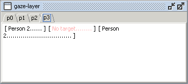

When you make annotations for a certain agent and layer, you can see the annotations for that agent and layer in the annotation window. However, you can also view annotations without selecting an agent and layer for annotation. In that case select a layer from the View menu (see Figure 1). Your screen will show view windows for the selected layers. To close a view window, deselect the layer in the View menu.
Figure 1: The View menu
Figure 2 shows a view window. The title bar shows the name of the layer. There are tab sheets for the available agents. In Figure 2 you see the gaze annotations for agent p3.

Figure 2: View window for the gaze layer
The view window shows the targets of the annotations, in this case Person 2, No target and again Person 2. The dots indicate the duration of an annotation.